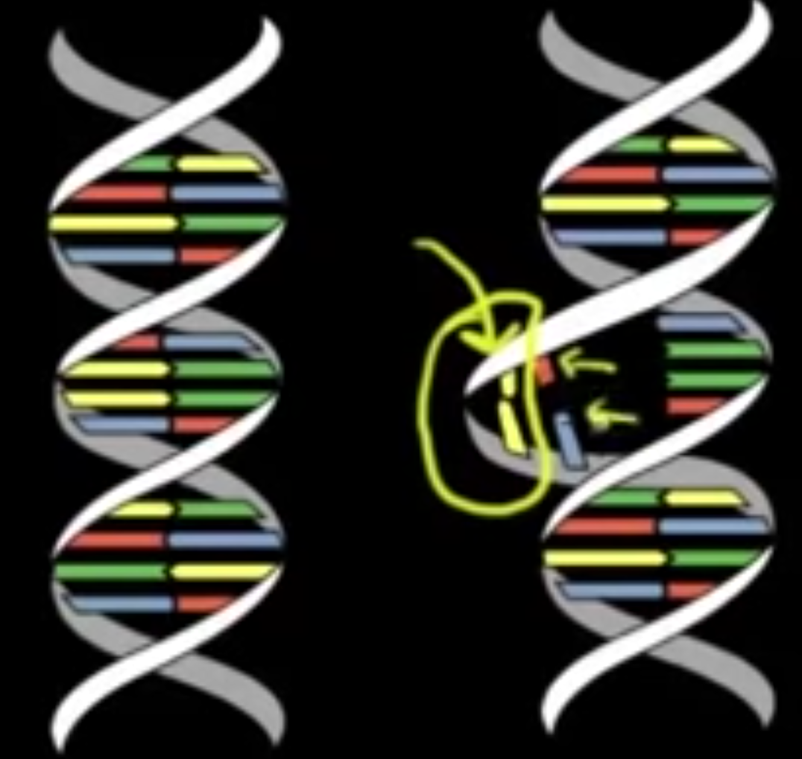
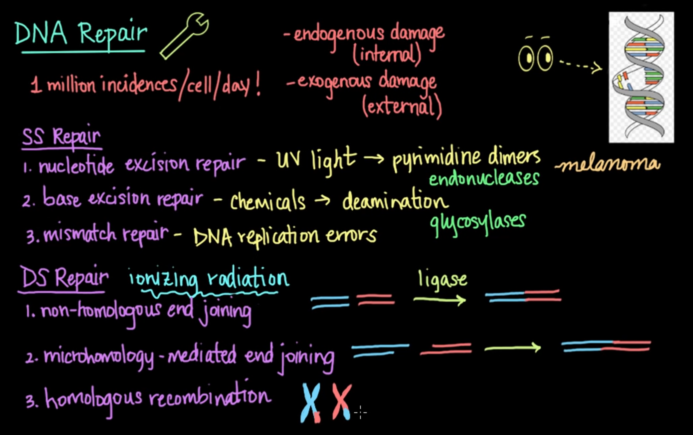

DNA Repair Pathway
Khan Academy Medicine Notes
DNA Repair 1- khanacademymedicine
- Pyrimidines: Thymine/Cytosine - single ring structure (6 sided)
- Purines: Adenine/Guanine - two rings (6 + 5 sides)
- DNA polymerase III can recognize errors and repair them from end of DNA strand its synthesizing
- Exonuclease activity: removing nucleotide at END of a DNA strand
- For DNAP III it is 3’-5’ specifically
- DNA Pol I has exonuclease activity in the 5’-3’ direction
- Is used normally to turn RNA primer of DNA synthesis in to DNA
- Repair capabilities of DNAP I and III turn error rate from 1 in 100k, to 1 in 100 million
- Exonuclease activity: removing nucleotide at END of a DNA strand
Mismatch repair mechanism: 1. One end marked with a cut 2. Exonuclease removes one side of mismatch 3. DNA polymerase adds correct basepair in 4. DNA ligases fix cut * Methylation used to distinguish which strand is correct in prokaryotes * Mechanism unknown in eukaryotes
DNA Repair 2- khanacademymedicine
-
UV light can damage DNA via creation of pyrimidine dimers
- Thymine-Thymine or Cytosine-Cytosine: 
-
DNA Damage ≠ DNA Mutation
- Damage (like in UV light) Structure is altered, but sequence is the same
Nucleotide Excision Repair: Fixes DNA damage * Endonuclease: Cuts out structurally aberrant nucleotides * DNA polymerase re-adds correct nucleotides * DNA Ligase fixes backbone and connects new nucleotides to appropriate base
Summary: 
Reactome Pathway Visualizer
DNA Repair Node: R-HSA-73894.3
- Specific mechanisms of repair depend on cell type, cell cycle, and cellular environment
- Utilization of low fidelity “last resort” mechanisms associated with senescence, aging, and cancer
- Germline mutations in dna repair genes are underlying causes of many familial cancer syndromes
- When level of DNA damage exceeds DNA repair mechanism capacity, cell undergoes apoptosis
- Actively dividing cells have limited time available for DNA repair, making them sensitive to DNA damaging agents
- Several primary pathways of human DNA repair. They are intimately associated with DNA replication, recombination, cell cycle, and apoptosis
- DNA damage bypass
- Does not remove damage, but allows trans-lesion DNA synthesis (TLS) using a damaged template strand. TLS allows cells to complete DNA replication postponing repair until cell division finishes.
- DNA polymerases utilized are error-prone, frequently introducing base substitutions and/or small insertions and deletions
- DNA damage reversal
- Acts on a very narrow spectrum of damaging base modifications to remove modifying groups and restore bases to original state
- Base excision repair (BER)
- Involves several DNA glycosylases that cleave a vast array of damaged bases from the DNA sugar-phosphate backbone
- Glycosylases create an abasic site that is then processed by endonuclease, polymerases, and ligases.
- Choice of processing depends on cell cycle stage, glycosylase identity, and presence of additional damage
- Yields error free DNA molecules
- Nucleotide excision repair (NER)
- Removes bulky lesions that cause distortion of the DNA double helix
- Excise oligonucleotide that contains the lesion from affected DNA strand
- Followed by gap filling DNA synthesis and ligation of repaired molecule
- Mismatch repair (MMR)
- MMR proteins recognize mismatched BPs or small indel loops during DNA replication and correct erroneous pairing by excising mismatched nucleotides exclusively from nascent DNA strand leaving template in tact
- Repair of double strand breaks (DSBs)
- Can be repaired very accurately with homologous recombination repair (HRR)
- Other error prone pathways to repair include:
- non homologous end joining (NHEJ)
- Single Strand annealing (SSA)
- Microhomology-mediated end joining (MMEJ)
- DSBs generated through DNA damaging agents like X-rays or Reactive oxygen species (ROS)
- Are also intermediates of the Fanconi Anemia pathway
- Repair of interstrand crosslinks (Fanconi anemia pathway)
- Inter-stand cross-linking (ICL) agents damage DNA by introducing covalent bonds between two DNA strands, this prevents progression of a DNA replication fork
- Fanconi anemia proteins repair ICLs by unhooking them from on DNA strand. TLS enables replication fork to bypass unhooked ICL resulting in two replicated DNA molecules
- One contains a DSB and triggers double strand break repair
- One contains bulky unhooked ICL that is removed using NER
- DNA damage bypass
- Suggested review: Lindahl and Wood 1999 and Curtin 2012
Fanconi Anemia (FA) Pathway: R-HSA-6783310.2
- FA is a genetic disease of genome instability characterized by congenital skeletal defects, aplastic anemia, leukemia susceptibility, cellular sensitivity to DNA damaging events
- 15 complementation groups (FA-A, -B, -C, -D1, -D2, -E, -F, -G, -I, -J, -L, -M, -N, -O and -P)
- Groups correspond to the genes: FANCA, FANCB, FANCC, FANCD1/BRCA2, FANCD2, FANCE, FANCF, FANCG, FANCJ/BRIP1, FANCL, FANCM, FANCN/PALB2, FANCO/RAD51C and FANCP/SLX4
- Eight of these proteins, FANCA, FANCB, FANCC, FANCE, FANCF, FANCG, FANCL, and FANCM, together with FAAP24, FAAP100, FAAP20, APITD1 and STRA13 Create nuclear complex termed FA Core Complex
- E3 ubiquitin ligase that recognizes and is activated by ICLs
- Triggers mono-ubiquitination of FANCD2 and FANCI which initiates repair of ICL-DNA
- FANCD2 and FANCI form a complex and are mutually dependent on one another for their respective monoubiquitination
- After DNA damage and during S phase, FANCD2 localizes to discrete nuclear foci that colocalize with proteins involved in homologous recombination repair like BRCA1 and RAD51
- Eight of these proteins, FANCA, FANCB, FANCC, FANCE, FANCF, FANCG, FANCL, and FANCM, together with FAAP24, FAAP100, FAAP20, APITD1 and STRA13 Create nuclear complex termed FA Core Complex
- FA Regulated by ubiquitination/phosphorilation of FANCD2 and FANCI
- ATR-dependent phosphorylation of FANCI and FANCD2 promotes monoubiquitination of FANCD2 stimulating FA pathway
- Monoubiquitinated FANCD2 recruits DNA nucleases including SLX4(FANCP) and FAN1 which unhook the ICL from one of the covalently linked DNA strands
- DNA polymerase nu (POLN) performs translation DNA synthesis using the DNA strand with the unhooked ICL as a template to bypass the unhooked ICL
- NER then removes the unhooked ICL
- Incision of stalled replication fork during the unhooking step generates a DSB repaired via HRR involving BRCA2 (FANCD1), PALB2 (FANCN), and BRIP1(FANCJ)
- Homozygous mutations in BRCA2, PALB2, or BRIP1 result in FA
- Heterozygous mutations predispose carriers to breast and ovarian cancer
- These proteins role in DNA repair is BRCA1 dependent
- Heterozygous BRCA1 mutations predispose to breast and ovarian cancer with high penetance
- Loss of BRCA1 is embryonic lethal
- Partial gremlin loss of BRCA1 function results in FA-like syndrome —> BRCA1 designated FANCS gene
- monoubiquitination: addition of a single ubiquitin peptide to the lysine of a protein
Mismatch Repair (MMR): R-HSA-5358508.1
- Corrects single base mismatches and small insertion and deletion loops (IDLs) of unpaired bases.
- Highly conserved across prokaryotes and eukaryotes
- Primarily associated with DNA replication
- Basic Steps:
- A sensor (MutS homologue) detects mismatch or IDL
- Activates a set of proteins (MutL homologue and an exonuclease) to select, nick, and exonucleolytically remove region of nucleotides from the nascent strand
- DNA polymerase resynthesizes the strand
- Ligase seals the remaining nick
- Humans have two MutS complexes
- MSH2:MSH6 heterodimer (MutSalpha) : Recognizes single base mismatches and loops of one or two unpaired bases
- MSH2:MSH3 heterodimer (MutSbeta) : Recognizes loops of two or more unpaired bases
- Upon binding mismatch, MutS complex activates in an ATP-dependent manner allowing for interactions and movement on DNA substrate
- Interacts with MLH1:PMS2 and Exonuclease 1 (EXO1) to initiate excision of the recently replicated strand and direct DNA polymerase delta to initiate replacement of bases.
- MLH1:PMS2 makes an incision in the strand to be repaired
- EXO1 extends the incision to make a single stranded gap of up to 1kb that removes the mismatched bases
- In some assays it has been found the EXO1 is not necessary, not sure why. Most of the time it is necessary
- Replication Protein A (RPA) binds the single stranded region to prevent rewinding of DNA and allows DNA polymerase delta to synthesize new strand
- Nick sealed by DNA Ligase I (LIG1)
- Order of steps and structural details not fully known
- Interacts with MLH1:PMS2 and Exonuclease 1 (EXO1) to initiate excision of the recently replicated strand and direct DNA polymerase delta to initiate replacement of bases.
- Concentrations of MMR proteins MSH2:MSH6 and MLH1:PMS2 increase in human cells during the S phase where they are at highest level and activity
- I.E. MutSalpha has highest activity or potential for activity during DNA replication (between G1 and G2)
- Defects in MSH2, MSH6, MLH1, and PMS2 cause hereditary nonpolyposis colorectal cancer (HNPCC, also known as Lynch syndrome)
Mismatch repair (MMR) directed by MSH2:MSH6 (MutSalpha): R-HSA-5358565.1
- Single base mismatches and unpaired loops of 1-2 nucleotides
- Is about 6-fold more abundant than MSH2:MSH3 (MutSbeta) in humans
- Imbalance of this ratio can cause mutator phenotype
- MSH6 subunit binds the mismatch which triggers the MSH2:MSH6 complex to exchange ADP to ATP
- Conformation changes to allow movement on DNA and interact with downstream effectors
- PCNA: Initiates excision of the recently replicated strand
- MLH1:PMS2: endonucleolytic activity to make nick
- EXO1: enlarges gap to hundreds of nucleotides
- Conformation changes to allow movement on DNA and interact with downstream effectors
- DNA polymerase delta polymerizes across gap, and remaining nick is sealed by DNA ligase I LIG1
Mismatch repair (MMR) directed by MSH2:MSH3 (MutSbeta): R-HSA-5358606.1
- Binds unpaired loops of 2 or more nucleotides
- 6x lower in concentration than alpha
- Similar information as for MutSalpha
- Key differences: MSH3 NOT specified to be the subunit that binds
Nucleotide Excision Repair (NER): R-HSA-5696398.2
Tree:
- Nucleotide Excision Repair (NER)
- Global Genome Nucleotide Excision Repair (GG-NER)
- DNA Damage Recognition in GG-NER
- Dual incision in GG-NER
- Formation of Incision Complex in GG-NER
- Gap-filling DNA repair synthesis and ligation in GG-NER
- Transcription-Coupled Nucleotide Excision Repair (TC-NER)
- Dual incision in TC-NER
- Formation of TC-NER Pre-Incision Complex
- Gap-filling DNA repair synthesis and ligation in TC-NER
- Global Genome Nucleotide Excision Repair (GG-NER)
NER Overview
- First described in E.coli ~1960 as the process whereby bulky base damage is enzymatically removed from DNA facilitating the recovery of DNA synthesis and cell survival
- Deficient NER processes linked to increased mutation rate and cancer
- Unique in prokaryotes but highly conserved in yeast and higher eukaryotes
- NER involved in repair of bulky adducts in DNA
- UV-induced photo lesions
- 6-4 photoproducts (6-4 PDDS)
- Cyclobutane pyrimidine dimers (CPDs)
- Chemical adducts formed from exposure to aflatoxin, benzopyrene and other genotoxic agents
- UV-induced photo lesions
- Two primary pathways: differ in method that DNA damage is initially recognized. Mostly same downstream
- Global Genome Nucleotide Excision Repair (GG-NER): transcription-independent and removes lesions from coding and non-coding DNA strands that are not being actively transcribed
- Transcription-coupled nucleotide excision repair (TC-NER): repairs damage in transcribed strands of active genes
- Several proteins involved in NER are key to basal transcription complex TFIIH.
- An ubiquitin ligase complex composed of DDB1, CUL4A or CUL4B and RBX1 participates in both GG and TC NER
- Suggests important role of ubiquitination in NER regulation
- An ubiquitin ligase complex composed of DDB1, CUL4A or CUL4B and RBX1 participates in both GG and TC NER
- Mouse models used to establish relation of NER defects and cancer
- Suggested review: Lindahl and Wood 1998, Friedberg et al. 2002, Christmann et al. 2003, Hanawalt and Spivak 2008, Marteijn et al. 2014
Global Genome Nucleotide Excision Repair (GG-NER): R-HSA-5696399.1
Steps:
- DNA recognition seen as joint action of two protein complexes
- First complex (XPC Complex): XPC, RAD23A or RAD23B, CETN2
- UV-DDB complex: ubiquitin ligase composed of DDB1, CUL4A or CUL4B, RBX1, and GG-NER specific protein DDB2
- In-vitro only necessary for GG-NER mediated repair of UV-induced pyrimidine dimers
- In vivo, where DNA repair occurs in chromatin context, likely facilitates GG-NER mediated repair irrespective of DNA damage type
- After damage recognition, TFIIH complex with XPA verifies damage, unwinds helix around damage thereby creating an open bubble
- Two endonuclease ERCC5 (XPG) and comely of ERCC1 and ERCC4 (XPF) excise oligonucleotide that contains damaged base(s)
- DNA poly delta, epsilon, and/or kappa perform DNA repair synthesis
- DNA ligated
DNA Damage Recognition in GG-NER: R-HSA-5696394.1
- First complex of XPC, RAD23A/RAD23B and CETN2: Probes DNA helix and recognizes disruption in normal Watson-Crick base pairing
- Results in binding of the XPC:RAD23:CETN2 complex to undamaged DNA strand
- Second Complex UV-DDB is necessary for recognition of UV-induced DNA damage and may contribute to retention of first complex
- Binds the damaged DNA strand
Dual Incision in GG-NER: R-HSA-5696400.1
- Dual incision at the damaged DNA strand excises the oligonucleotide that contains the lesion from the open bible.
- Excised region is ~27-30 bases long
- 5’ incision by ERCC1:ERCC4 endonuclease
- 3’ incision by ERCC5 endonuclease
Formation of Incision Complex in GG-NER: R-HSA-5696395.1
- After XPC complex and UV-DDB complex bind damaged DNA, a basal transcription factor TFIIH is recruited to the NER site
- DNA helicases ERCC2 (XPD) and ERCC3 (XPB) are subunits of TFIIH complex
- ERCC2 unwinds the DNA around the damage in concert with ATPase activity of ERCC3
- Creates open bubble
- Simultaneously presence of the damage is verified by XPA
- Recruitment of XPA is partially regulated by PARP1 and PARP2
- During excision by ERCC1:ERCC4 and ERCC5, RPA heterotrimer coats the undamaged na strand to protect it from endonucleolytic attack
Gap-filling DNA repair synthesis and ligation in GG-NER: R-HSA-5696397.1
- GG-NER completed by DNA repair synthesis that fills the single stranded gap created after excision
- Performed by DNA polymerase epsilon or delta or the “Y family DNA polymerase kappa” (POLK)
- LIG1 or LIg3 (as part of LIG3:XRCC1 complex) ligate newly synthesized stretch of oligonucleotides
Transcription-Coupled Nucleotide Excision Repair (TC-NER): R-HSA-6781827.1
- Damage in transcribed strands of active genes repaired through Transcription-coupled NER
- Impairment in TC-NER is underlying cause of severe hereditary disorder Cockayne syndrome and an autosomal recessive disease characterized by hypersensitivity to UV light
- Triggered by helix distorting lesions that block the progression of elongating RNA polymerase II (RNA Pol II)
- Stalled RNA Pol II complex triggers recruitment of ERCC6 (or CSB Cockayne Syndrome Protein B) which recruits ERCC8 (Cockayne syndrome protein A or CSA)
- ERC88 has 7 WD repeat motifs (forms a ring of triangles) and is part of ubiquitin ligase complex that includes DDB1 CUL4A or CUL4B and RBX1
- SIMILAR in structure to UVDDB from GG-NER but lacks DDB2
- Key regulator of TC-NER that may exert role by ubiquitinating one or more factors involved in repair like RNA pol II and ERCC6
- ERC88 has 7 WD repeat motifs (forms a ring of triangles) and is part of ubiquitin ligase complex that includes DDB1 CUL4A or CUL4B and RBX1
- Stalled RNA Pol II complex triggers recruitment of ERCC6 (or CSB Cockayne Syndrome Protein B) which recruits ERCC8 (Cockayne syndrome protein A or CSA)
- TFIIH (transcription elongation factor) recruited to TC-NER site
- Pre-incision complex includes XPA, XAB2 complex, TCEA1 (TFIIS), HMGN1, UVSSA in complex with USP7, and EP300(p300).
- XPA probably contributes to assembly and stability of complex as it does in GG-NER
- XAB2 is involved in pre-mRNA splicing and may modulate structure of nascent mRNA hybrid with template DNA through its RNA-DNA helicase activity
- TCEA1 may be involved in RNA Pol II backtracking, allows repair proteins to gain access to the damage site
- Also facilitates trimming of the 3’ end of protruding nascent mRNA from stalled RNA Pol II, enabling recovery of RNA synthesis after repair
- De-ubiquitinating activity of UVSSA:USP7 complex needed for ERCC6 stability at repair site.
- Non histone nucleosomal binding protein HMGN1 and histone acetyltransferase p300(EP300) remodels chromatin around the damaged site
- Dual incision of the lesion-containing oligonucleotide from the affected DNA strand is performed by same molecules as in GG-NER (ERCC1:ERCC4 and ERCC5)
- Same repair process with DNA Pol delta, epsilon, or kappa followed by DNA ligases LIG1 or LIG3:XRCC1
- After damage repair done, RNA synthesis continues by RNA Pol II
Base Excision Repair (BER): R-HSA-73884.2
Tree
Base Excision Repair (BER)
- Base-Excision Repair, AP Site Formation
- Depurination
- Cleavage of the damaged purine
- Recognition and association of DNA glycosylase with site containing an affected purine
- Depyrimidination
- Cleavage of the damaged pyrimidine
- Recognition and association of DNA glycosylase with site containing an affected pyrimidine
- NEIL3-mediated resolution of ICLs
- Depurination
- Resolution of Abasic Sites (AP sites)
- APEX1-Independent Resolution of AP Sites via the Single Nucleotide Replacement Pathway
- Displacement of DNA glycosylase by APEX1
- Resolution of AP sites via the multiple-nucleotide patch replacement pathway
- PCNA-Dependent Long Patch Base Excision Repair
- POLB-Dependent Long Patch Base Excision Repair
- Resolution of AP sites via the single-nucleotide replacement pathway
- Abasic sugar-phosphate removal via the single-nucleotide replacement pathway
Overview
- BER involves the greatest number of individual enzymatic activities of the 3 primary repair pathways
- Due to numerous individual glycosylases, each of which recognizes and removes a specific modified base(s) from DNA
- Repairs the most prevalent types of DNA lesions, oxidatively damaged DNA bases, which arise as a consequence of:
- reactive oxygen species generated by normal mitochondrial metabolism
- Oxidative free radicals from ionizing radiation
- Lipid per oxidation or activated phagocytic cells
- BER is a two step process initiated by a DNA glycosylase that recognizes a specific base modification
- Base is removed through catalytic cleavage of glycosydic bond, leaving an basic site without disruption of phosphate-sugar backbone
- Abasic sites are resolved by a series of enzymes that cleave backbone, insert replacement, ligate DNA
- May occur by either a single nucleotide replacement pathway or a multiple-nucleotide patch replacement pathway depending on structure of terminal sugar phosphate residue
- Glycosylases found in human cells recognize “foreign adducts” and not standard functional modifications such as DNA methylation
Base-Excision Repair, AP Site Formation: R-HSA-73929.2
- Initiation of BER is done by DNA glycosylases hydrolytic ally cleaving the base-deoxyribose glycosly bond of a damaged nucleotide residue releasing the damaged base
- Glycosylase cleaves the N-C1’ glycosidic bond between damaged DNA base and deoxyribose sugar generating a free base and an abasic(e.g apurinic/apyramidic site)
Depurination: R-HSA-73927.1
- Purine-specific DNA glycosylase mediates this type of removal
- Glycosylase Proteins involved:
- NEIL1, NEIL3, NTHL1, OGG1, MUTYH, MPG
Cleavage of the damaged purine: R-HSA-110331.2
- Damaged purines are cleaved from the sugar-phosphate backbone by purine-specific glycosylases
Recognition and association of DNA glycosylase with site containing an affected purine: R-HSA-110330.3
- Recognition and removal is thought to involve diffusion of the enzyme along the minor grove of the DNA molecule
- Enzyme presumable compresses the backbone of the affected DNA strand at the site of damage
- Compression thought to result in outward rotation of damaged residue into a “pocket” of the enzyme that recognizes and cleaves the altered base from the backbone
Depyrimidination: R-HSA-73928.1
- Same as above but with pyrimidines
- Glycosylases involved:
- MBD4, SMUG1, TDG, UNG-1, NEIL2
NEIL3-mediated resolution of ICLs: R-HSA-9636003.1
- DNA Glycosylase activity of NEIL3 involved in unhooking (resolution) of psolaren-induced inter stand crosslinks (ICLs) as well as basic site-induced ICLs in a Fanconia anemia pathway-independent fashion
Resolution of Abasic Sites (AP sites): R-HSA-73933.1
- Resolution occurs through multiple nucleotide patch replacement pathway or single nucleotide replacement
- Single and multiple-nucleotide patch replacement are both initiated by APEX1-mediated displacement of DNA glycosylases and cleavage of the damaged DNA strand by APEX immediately 5’ to the AP site.
- Not true for APEX-1independent resolution of AP sites via single nucleotide BER via NEIL1 or NEIL2
- Single NR when the AP residue at the 5’ end of the APEX1-created single stranded break (SSB) (5’dRP) can be removed by the 5’ exonuclease activity of DNA polymerase beta (POLB)
- POLB fills the single nucleotide gap by adding a complementary nucleotide to the undamaged DNA strand at the 3’ end of the SSB
- Patch replacement pathway when AP residue at the 5’ end of APEX1-created SSB undergoes oxidation related damage (5’ddRP) and cannot be cleaved by POLB
- Long patch BER can be completed by POLB-mediated DNA strand displacement synthesis in presence of PARP1 or PARP2, FEN1, and DNA Ligase I
- When PCNA-containing replication complex is available, as with cells in S-phase, DNA strand displacement synthesis is catalyzed by DNA polymerase delta (POLD) or DNA polymerase epsilon (POLE) complezes
- In the presence of PCNA, RPA, RFC, APEX1, FEN1, and LIG1
- 9-1-1 repair complex of HUS1, RAD1, and RAD9 interacts with and coordinates components of BER but mechanism/timing unknown
Displacement of DNA glycosylase by APEX1: R-HSA-110357.1
- Following cleavage of the damaged base, DNA glycosylase is displaced by APEX1 an AP endonuclease
Resolution of AP sites via the single-nucleotide replacement pathway: R-HSA-110381.1
- Facilitates repair of most damaged bases
- APEX1 is recruited to site of damage where it cleaves 5’ side of the basic (AP) residue. [SUB PATHWAY: R-HSA-73930.]
- DNA polymerase Beta (POLB) then cleaves the 3’ side of AP sugar phosphate excising the AP residue
- Alternate pathway used if this not possible due to oxidative damage of 5’ side
- APEX1 is released and XRCC1:LIG3 complex recruited
- POLB mediates synthesis of the replacement residue and LIG3 ligation
- XRCC1:LIG3 complex dissociates from DNA
Resolution of AP sites via the multiple-nucleotide patch replacement pathway: R-HSA-110373.1
- Used when POLB cannot cleave 3’ side due to nature of 5’-terminal sugar phosphate structure
- In this scenario, short stretch of residues containing the basic site is excised and replaced
- Following Glycosylaze mediated cleavage of damaged base, APEX1 cleaves 5’ side of basic residue
- POLB then synthesizes the firs replacement residue without prior cleavage of the 5’-terminal sugar phosphate, displacing this entitiy
- Can be continued by POLB-mediated DNA strand displacement synthesis in presence of PARP1 or PARP2, FEN1, and DINA Ligase 1
- If PCNA-containing replication complex available (as during S-phase), displacement synthesis catalyzed by POLD or POLE complexes
- Occurs in presence of PCNA, RPA, RFC, APEX1, FEN1, and LIG1
- In both POLB and PCNA dependent displacement synthesis displaced DNA strand with basic phosphate creates a flap structure that is recognized and cleaved by FEN1.
- Replacement residues are then ligated by LIG1
- TODO: Both downstream nodes of this one (POLB and PCNA dependent replacement)
APEX1-Independent Resolution of AP Sites via the Single Nucleotide Replacement Pathway: R-HSA-5649702.1
- NEIL1 and NEIL2 have a dual DNA glycosylase and beta/delta lyase activity.
- The AP site directed activity of NEIL1 and 2 is their major physiological role
- They act on AP sites generated spontaneously or by other glycosylases
- Cleaves the damaged DNA strand at the 5’ AP site created a 3’ phosphate terminus (3’Pi) and a (5’dRP)
- POLB excises 5’dRP residue but is unable to add replacement nucleotide with the 3’Pi end
- PNKP, a DNA 3’phosphatase removes 3’Pi and enables POLB to incorporate replacement nucleotide
- Ligation done by XRCC1:LIG3 complex